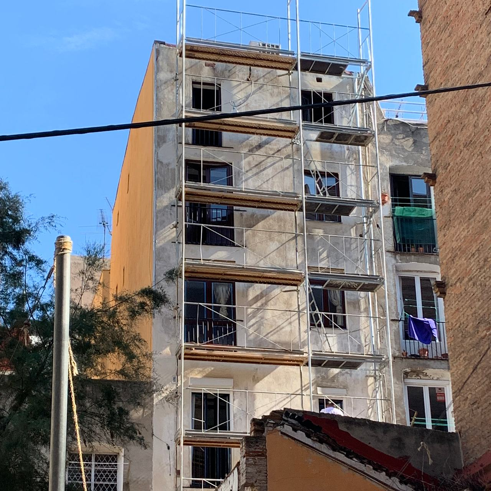

Fachadas de comunidad: primero el diagnóstico
Pintura y rehabilitación de fachadas en Terrassa, Sabadell y el Vallès. Una fachada que se desconcha a los pocos años casi nunca es culpa de la pintura: es el soporte, la humedad o el sistema equivocado. Empezamos por ahí.

Qué le pasa a tu fachada
Lo primero que miramos desde la calle y, después, desde cerca. Cada lesión pide una reparación distinta antes de la pintura.
- Pintura que se levanta en placas
- Suele ser humedad atrapada detrás de una pintura que no deja respirar, o capas antiguas mal adheridas. Hay que retirarlas, no pintar encima.
- Fisuras y grietas
- Las finas del revoco se abren, se sanean y se rellenan. Las que se mueven o crecen pueden ser estructurales y hay que estudiarlas antes.
- Revoco hueco o que se desprende
- Suena a hueco al golpearlo. Se pica hasta el soporte sano y se rehace con un mortero compatible con el original.
- Manchas de humedad y sales
- Zonas oscuras en la parte baja o polvo blanco que aparece en la superficie. Hasta que no se corta el agua, ninguna pintura dura.
- Suciedad y chorretones
- Bajo cornisas, balcones y vierteaguas sin goterón. Se limpia la fachada y se corrige por dónde escurre el agua.
Una pintura para cada soporte
No hay una «pintura de fachada» que sirva para todo. Esta es la diferencia entre los tres sistemas más habituales.
| Pintura al silicato | Pintura acrílica | Revestimiento elástico | |
|---|---|---|---|
| Cómo actúa | Se une químicamente al soporte mineral: no forma una película | Forma una película fina sobre la superficie | Película gruesa y flexible |
| Transpira | Mucho: deja salir la humedad del muro | Moderadamente | Poco |
| Color con los años | Pigmentos minerales muy estables al sol | Bueno, según la calidad | Bueno; tiende a ensuciarse antes |
| Dónde encaja | Revocos de cal y morteros minerales, edificios antiguos | Morteros de cemento y fachadas ya pintadas en buen estado | Fachadas con microfisuras estables, sobre soporte seco |

Lo que necesita el administrador
Diagnóstico con fotos
Las lesiones de la fachada, dónde están y por qué aparecen. Se entiende sin ser técnico y se puede enseñar en la junta.
Presupuesto por partidas
Andamio o medios auxiliares, reparaciones y pintura por separado, con el sistema y la marca indicados.
Calendario y vecinos
Fechas de montaje del andamio, protección de ventanas y balcones, y avisos a los vecinos acordados con el administrador.
Entrega
Revisión final de la fachada y explicación del mantenimiento: limpieza de canalones, vierteaguas y puntos que conviene vigilar.
Viviendas, de andamio a acabado
Fachadas de viviendas con revestimiento ocre, durante los trabajos y terminadas; en la primera, junto a la fachada vecina sin rehabilitar. Pulsa una foto para verla grande.
Sobre fachadas de comunidad
¿Siempre hace falta andamio?
No siempre. Depende de la altura, del estado de la fachada y de lo que haya que reparar. En algunos casos basta con plataforma elevadora o trabajos verticales; lo decidimos en la visita y va como partida aparte en el presupuesto.
¿Se puede pintar encima de la pintura vieja?
Si está bien adherida y es compatible con la nueva, sí. Si se levanta o es una pintura plástica sobre un revoco de cal que necesita transpirar, hay que retirarla primero.
¿Por qué pintura al silicato en un edificio antiguo?
Porque deja salir la humedad del muro y se integra en el revoco mineral en lugar de formar una capa encima. En fachadas de cal suele durar más que una pintura plástica. Si el edificio está protegido, mira acabados en edificios históricos.
¿Hacéis también patios de luces y medianeras?
Sí: el sistema se elige igual, según el soporte. En patios interiores conviene vigilar sobre todo la humedad y la ventilación.
¿Trabajáis en Sabadell y otras ciudades del Vallès?
Sí. Estamos en Terrassa y trabajamos en Sabadell, el Vallès, Barcelona y el resto de Cataluña.
¿Cómo está la fachada?
Mándanos fotos de la fachada (de lejos y de las zonas dañadas), la población y el número de plantas. Si eres administrador, dinos cuándo es la próxima junta.